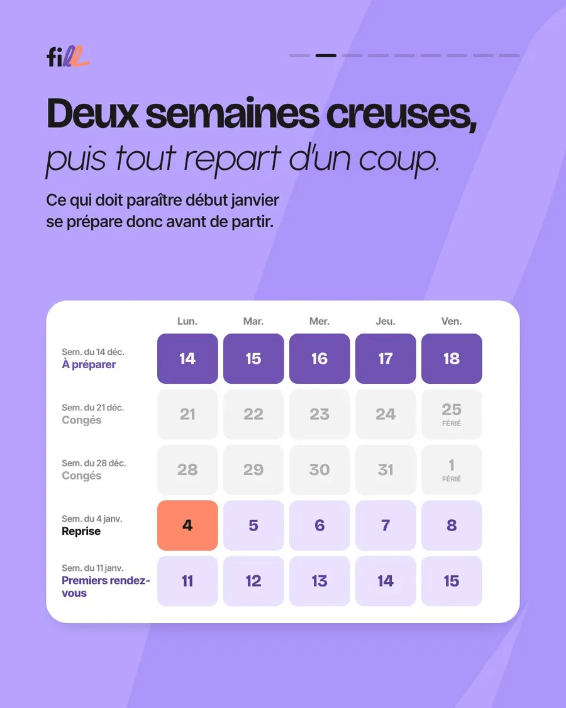
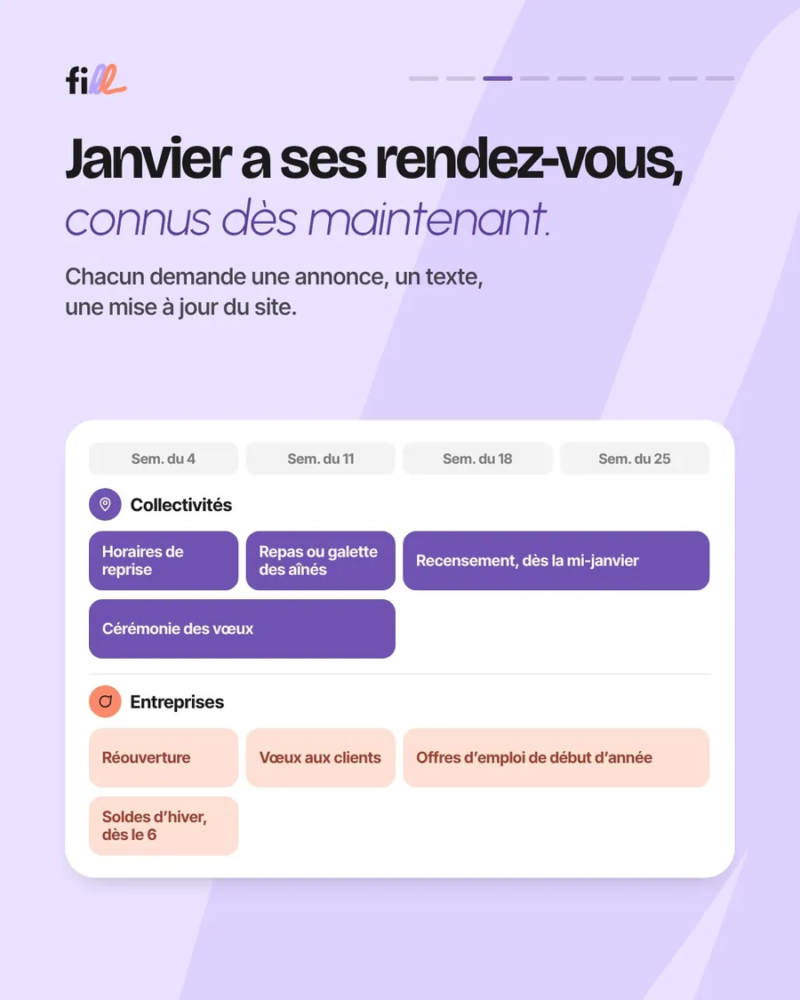
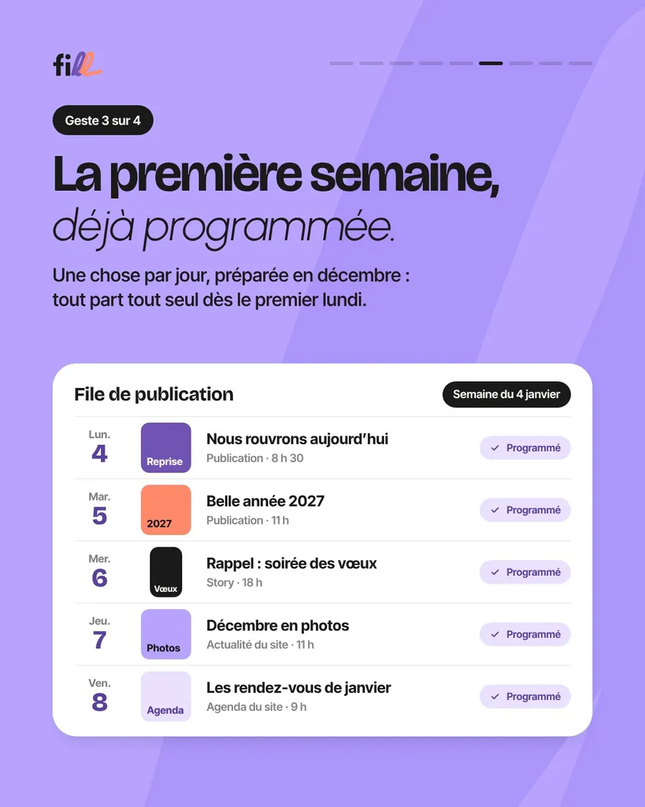
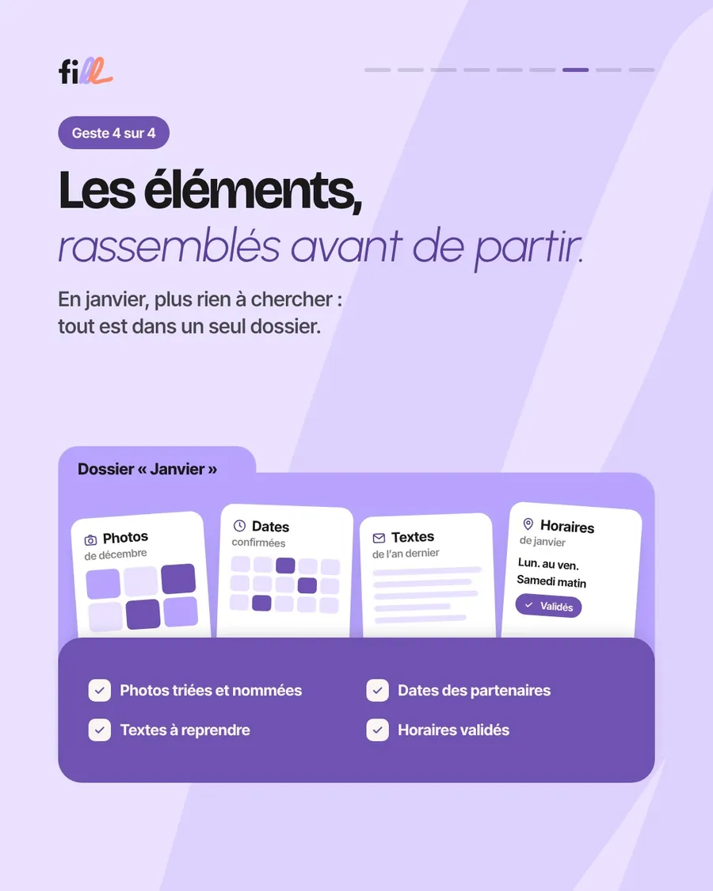

Fin décembre, les bureaux ferment ou tournent au ralenti pendant deux semaines. Début janvier, tout repart en même temps : horaires de reprise, vœux, recensement, soldes, premiers rendez-vous de l’année. Ce qui doit paraître la première semaine se prépare donc avant de partir. Quatre gestes suffisent pour éviter la page blanche du 4 janvier.
Deux semaines creuses, puis tout repart
Le calendrier de fin d’année est toujours le même. Les deux semaines qui entourent Noël et le jour de l’an sont des semaines de congés, pour les agents comme pour les salariés. Le lundi 4 janvier 2027, tout reprend d’un coup.
Ce qui doit être publié dans les premiers jours de janvier (horaires de reprise, vœux, rendez-vous du mois) ne peut donc pas être préparé pendant ces deux semaines. Il reste une fenêtre utile : la semaine du 14 décembre, avant les départs.

Les rendez-vous de janvier, connus dès maintenant
La plupart des sujets de janvier sont prévisibles. Chacun demandera une annonce, un texte, une mise à jour du site.
Pour une collectivité :
- les horaires de reprise de la mairie et des services ;
- la cérémonie des vœux, avec son invitation ;
- le repas ou la galette des aînés ;
- le recensement de la population, dans les communes concernées cette année : la collecte 2027 se déroule du 21 janvier au 20 février dans les communes de moins de 10 000 habitants.
Pour une entreprise :
- la réouverture et les horaires de janvier ;
- les vœux aux clients et aux partenaires ;
- les soldes d’hiver pour les commerces, qui commencent le mercredi 6 janvier 2027 dans la plupart des départements ;
- les offres d’emploi de début d’année.

Geste 1 : écrire la reprise à l’avance
La première publication de l’année est la plus simple, et la plus souvent oubliée : « Nous rouvrons aujourd’hui, voici nos horaires. » Elle s’écrit en décembre et se programme pour le premier jour ouvré, à l’heure d’ouverture.
Le même jour, le site doit être juste. Avant de partir, trois vérifications :
- les horaires de la page d’accueil et de la page Contact sont ceux de janvier ;
- le bandeau « Fermé pour les fêtes » est programmé pour disparaître, ou noté pour être retiré dès le retour ;
- la fiche d’établissement Google affiche les bons horaires pour la période des fêtes et la reprise.
Geste 2 : annoncer les rendez-vous avant les fêtes
Tout ce qui demande une réponse en janvier doit être annoncé en décembre. Une invitation à la cérémonie des vœux envoyée au retour des congés laisse une semaine aux invités pour s’organiser ; envoyée mi-décembre, elle en laisse quatre.
Le bon calendrier pour une soirée des vœux mi-janvier ressemble à ceci :
| Date | Étape |
|---|---|
| Mi-décembre | L’invitation part |
| Avant les congés | Les réponses attendues sont annoncées |
| Fin décembre | Congés |
| Mi-janvier | La soirée a lieu |
Geste 3 : programmer la première semaine
Une chose par jour suffit. La première semaine de janvier peut être entièrement préparée et programmée en décembre, dans les outils de publication des réseaux sociaux ou dans le site.
Un exemple de file de publication pour la semaine de reprise :
- Lundi : publication de reprise avec les horaires.
- Mardi : les vœux, en publication et en actualité du site.
- Mercredi : rappel de la soirée des vœux en story.
- Jeudi : décembre en photos, en actualité du site.
- Vendredi : les rendez-vous de janvier dans l’agenda.
Au retour, il ne reste qu’à répondre aux messages et à suivre l’actualité, au lieu de tout créer en même temps.

Geste 4 : rassembler les éléments dans un seul dossier
En janvier, le temps perdu vient rarement de la mise en page. Il vient de la recherche : les photos de décembre dans plusieurs téléphones, les dates des partenaires à confirmer, le texte des vœux de l’an dernier introuvable.
Avant de partir, un dossier « Janvier » partagé, avec quatre sous-dossiers :
- Photos de décembre, triées et nommées ;
- Dates confirmées des partenaires et des événements ;
- Textes de l’an dernier à reprendre (vœux, invitation, annonce du recensement) ;
- Horaires de janvier validés.

La liste de contrôle avant de partir
- La publication de reprise est écrite et programmée.
- Les horaires de janvier sont à jour sur le site et sur la fiche Google.
- Les invitations des rendez-vous de janvier sont parties.
- La première semaine est programmée, une publication par jour.
- Le dossier « Janvier » est complet et partagé.
- Une personne sait où le trouver.